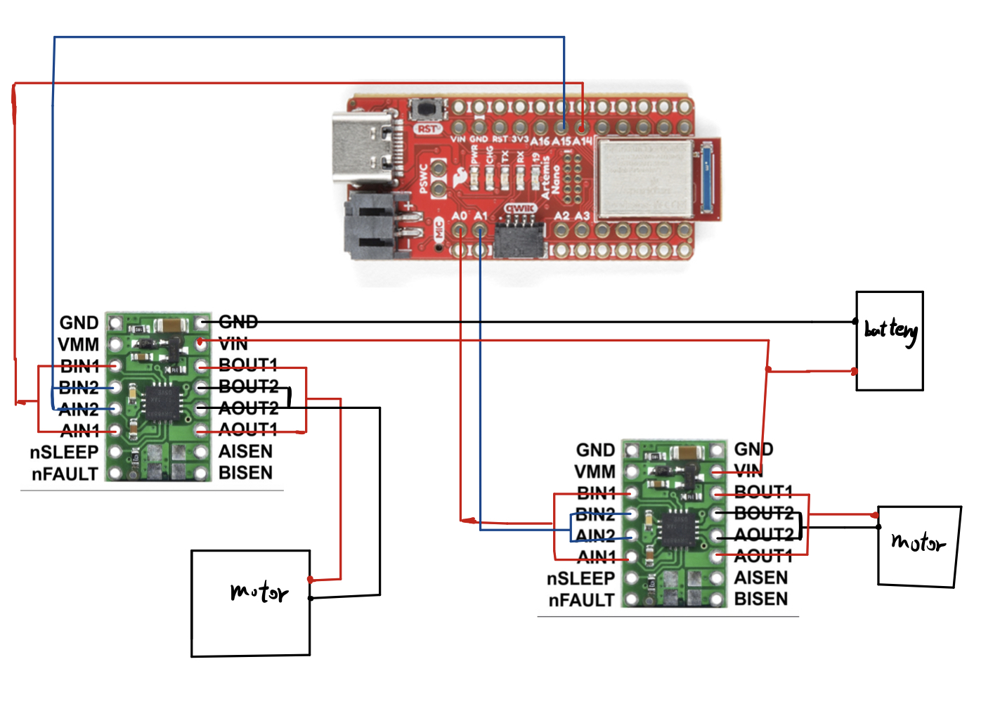
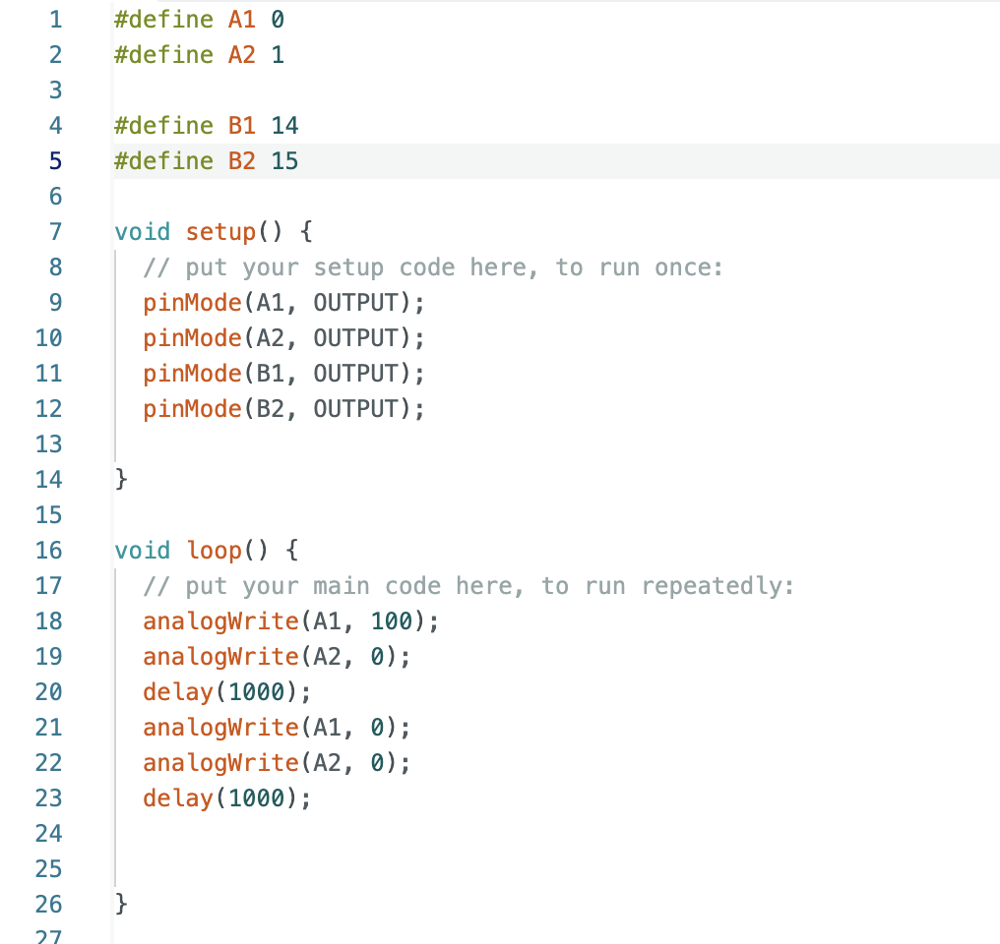
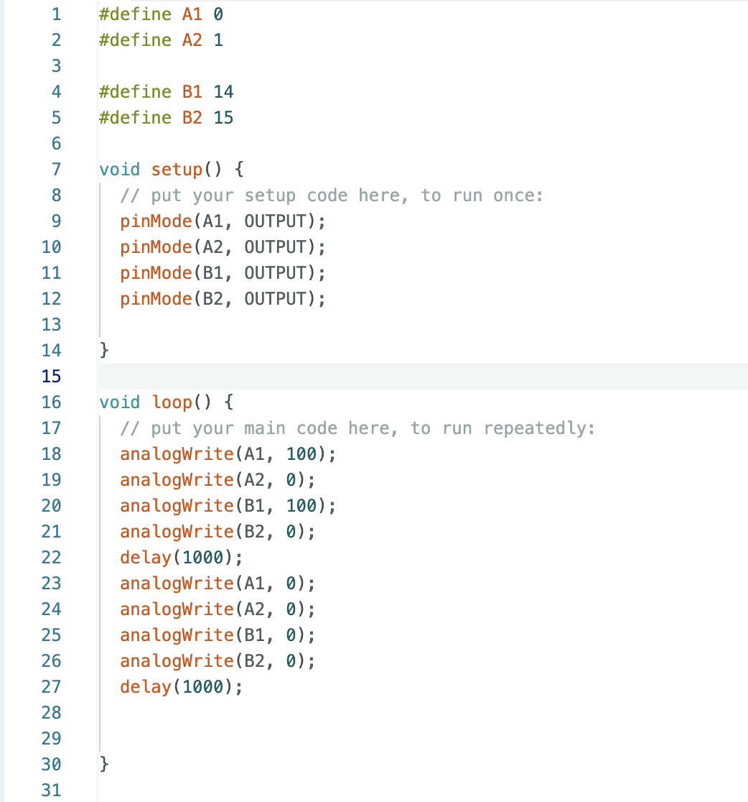
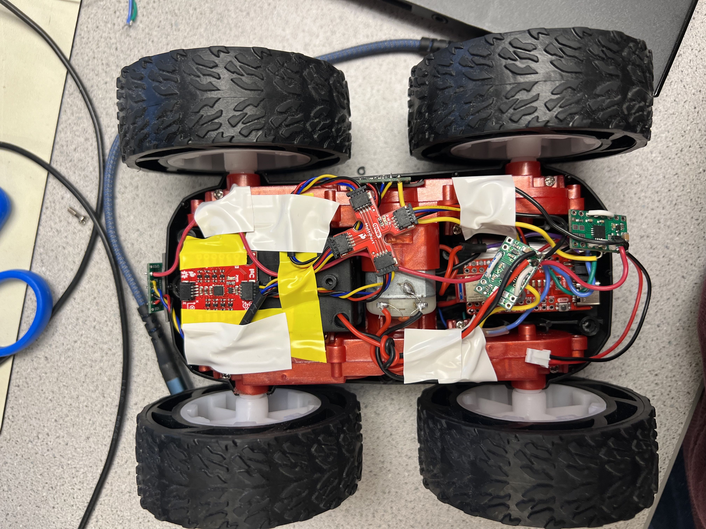
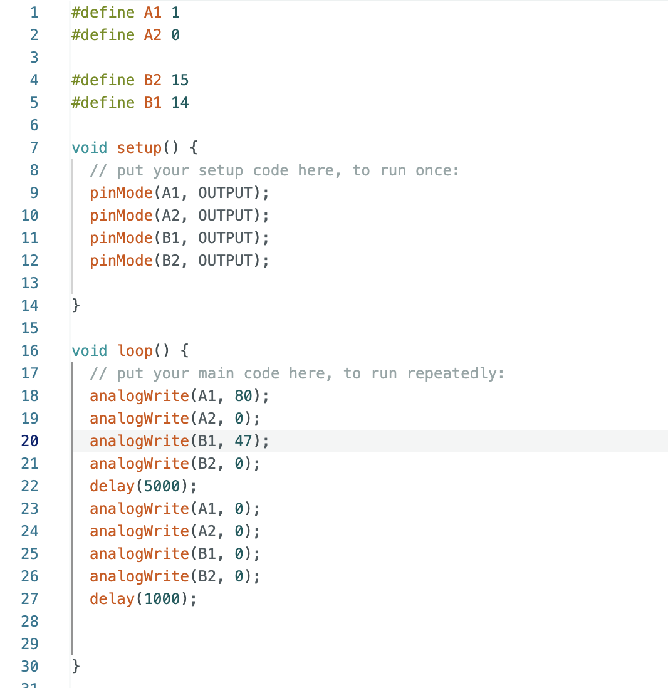
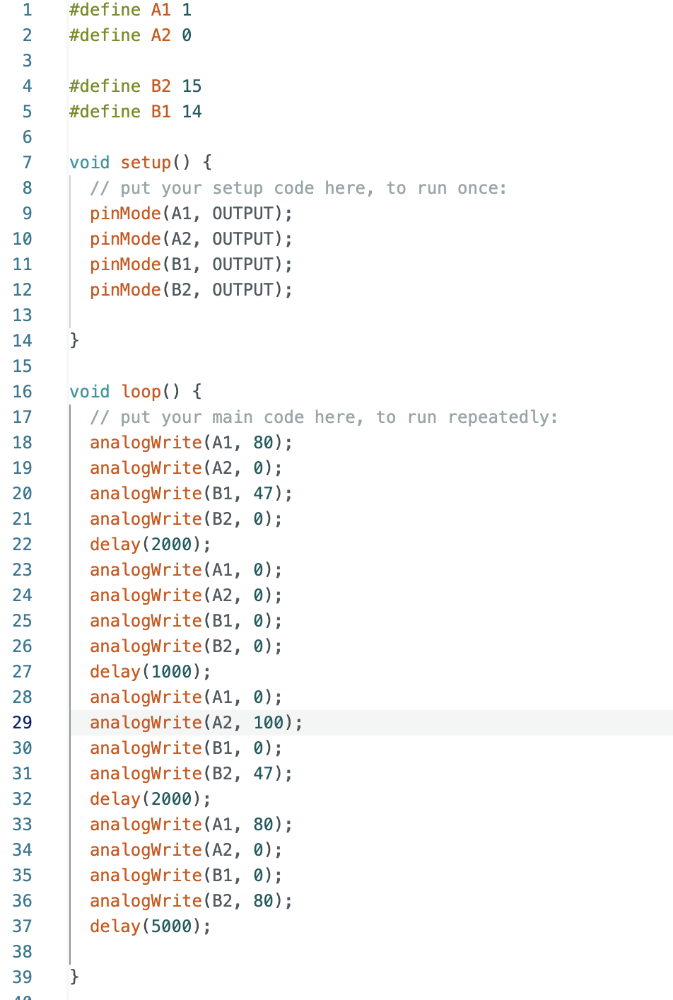

Lab 5: Motors and Open Loop Control
Zhiyuan Zhang
Introduction
The aim of this laboratory exercise is to control the motor by using open loop control. By the end of the lab, the car should be capable of performing a predetermined sequence of actions by utilizing the Artemis board and two dual motor drivers.
Lab Procedure And Result
1. PreLab
a) The illustration presented beneath depicts the manner in which I ultimately linked all of the components together, which encompassed the Artemis, two motor drivers, motors, and batteries.
As the Artemis necessitates significantly less current to operate than the motors, two distinct batteries were utilized to power each component. To elaborate, the motors that consume more power are powered by a battery with a higher energy capacity of 3.7V and 850mAh. Conversely, the Artemis is powered by a 3.7V and 650mAh battery due to its lower power requirements.
2.Single Dual Motor Driver
For one motor driver ,I connect the BIN1 and BIN2 to A0 and A1 respectively ,using the power supply to power the motor driver. I then used the code below to generate the PWM for the driver

The voltage supply I set up is 3.7v ,and I measured the pwm signal from the BOUT2 pin.The Setting and the result is shown below:


3.Spinning Wheels
Once I confirmed the correctness of the connections and outputs, I dismantled the car and connect the motor drivers as shown in the prelab connection diagram, The code snippet I used is shown below:
The result is shown in the video below:
Similar to the one side motor spinning , I used the code below to run the both side motors
The video below shows powered by batteries, both sides of wheels spin as the code defines.
Once I had verified that both motor drivers were functioning correctly, I proceeded to incorporate the various components from previous labs, such as the IMU and ToF sensors, into the car's system. The accompanying image illustrates the final configuration of these components within the car.
3.Lower Limit PWM Values
After conducting numerous experiments, I discovered that to enable my robot to move forward from a stationary position on the floor, the PWM must be set to at least 40 . This value is necessary to provide the motors with enough power to initiate movement. The vide is shown below:
To find minimum pwm for a turn, the pwm for the left is 50 and 30 for the right motor
4.Straight line Calibration
As I set the right and left motors to the same pwm,I found that my robot goes towards the left. Therefore , I decreased the duty cycle of the right motor to 58% of the counterpart of the left motor, The code below is used to run a straight line.
5.Open loop
Below is the code I employed to execute the open loop. Initially, the robot will move forward for a duration of 2 seconds, followed by a 1-second halt. Subsequently, it will travel in reverse before ultimately executing a turn.
The result for open loop test is shown in the video below:
6.AnalogWrite frequency discussion
As shown from the oscilloscope ,the frequency is 183.1 Hz .And from the data sheet,the frequency is 490Hz, In my opinion, the current PWM frequency is sufficient. However, increasing it could offer the advantage of more precise control over the motor, resulting in a more rapid response.
7.Lowest PWM value speed (once in motion)
Similar to the test Lowest PWM value speed in section 4, I gave the robot a initial speed and then let it run on its own.I found that the lowest PWM is 37 for both left and right motors, The video below shows the result: